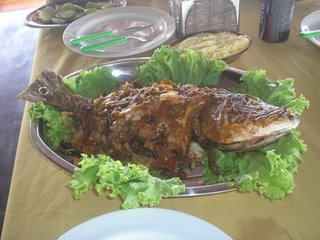
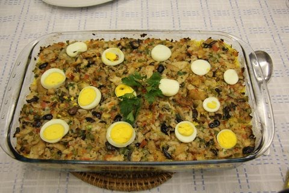
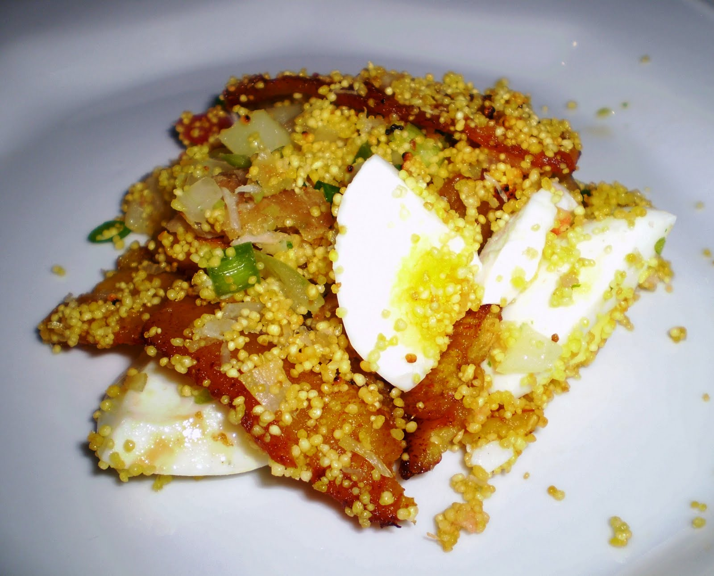

AO NORTE DO BRASIL A COMIDA BASEADA EM PEIXES, E EM ESPECIAL DESTACANDO-SE O AMAZONAS COMO PIRARUCU E O
TUCUNARÉ.NAS OUTRAS REGIÕES COMO O PARÁ TAMBÉM E COMUM O PEIXE NO CARDAPIO COMO O TACACÃ,JACARÉ.E PARA SOBREMESA AS MAIS APRECIADAS SÃO:SOREVETES DE AÇAI,CUPUAÇU,MANGA,GRAVIOLA E MURICI TAMBÉM OFERECIDOS EM FORMA DA DOCE


